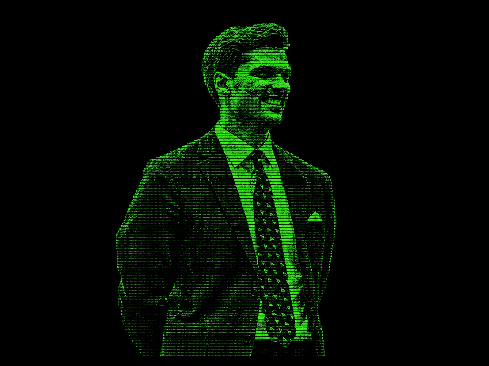

Gilian Ponte
Hi there!
I am Gilian Ponte, Assistant Professor of Marketing at the Rotterdam School of Management.
Research
My research lies at the intersection of marketing analytics and privacy, with a particular focus on differential privacy, econometrics, and machine learning. I study how organizations can protect individual privacy while still generating meaningful insights from data, with implications for both academic research and managerial practice.
Publications
Differential Privacy & Marketing Analytics (2024)
Gilian Ponte
PhD Thesis
Where’s Waldo? A Framework for Quantifying the Privacy–Utility Trade-off in Marketing Applications (2024)
with Tom Boot, Jaap Wieringa, and Peter Verhoef
International Journal of Research in Marketing
IJRM Best Paper Award Finalist 2024
Featured in the IJRM Newsletter
Code
Where Should Firms Implement Differential Privacy in Targeting? Implications for Profitability (2026)
with Tom Boot, Thomas Reutterer, and Jaap Wieringa
Journal of Marketing Research
Work in Progress
I am currently working on the following projects, in order of maturity:
- Private Randomized Response — with Tom Boot and Jaap Wieringa
- Setting Privacy Risk Budgets in Online Experiments — with Alina Ferecatu
- Machine Unlearning in Targeting — with Ta-Wei (David) Huang
- Shuffling for Data Privacy — with Tom Boot and Bruno Jacobs
Public Policy
Beyond academia, I actively contribute to privacy-related policymaking in the Netherlands. I have collaborated with organizations such as UWV, DUO, TNO, CBS, and the Ministry of Justice and Security. If you work in policy and are exploring data protection, feel free to get in touch.
Outside of Work
Outside of research and teaching, I enjoy music, road cycling, philosophy, reading, and good food. Fortunately, the cycling helps balance out the food. That list also helps explain why this website is not always fully up to date.